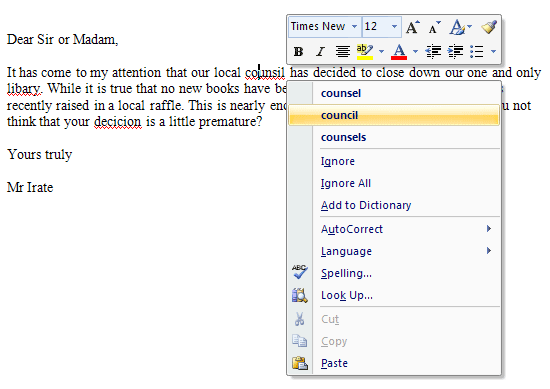
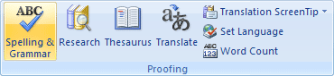
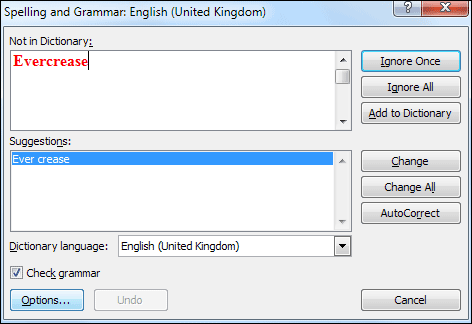
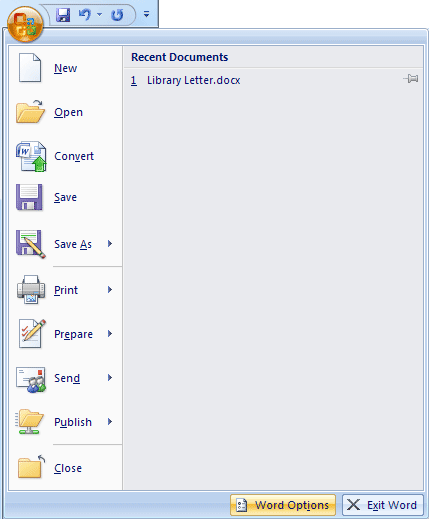
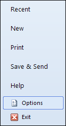
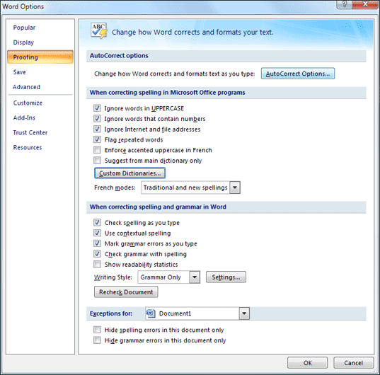
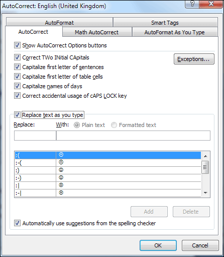
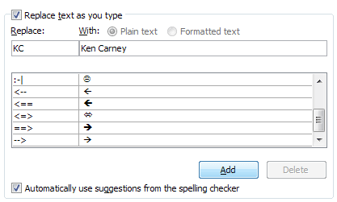
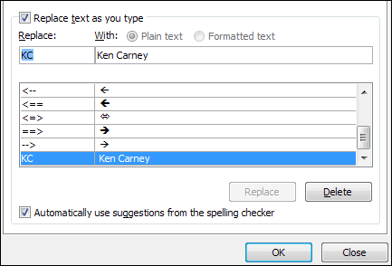

Free
computer Tutorials
|
Free
computer Tutorials
|
|
 home home |
|
|||||
Microsoft Word 2007 to 2010
Spelling and Grammar CheckingOne thing you probably will have noticed is the spelling mistakes in the letter. You should have typed the letter exactly as it was, and left any spelling errors in. More than likely, the spelling mistakes are underlined in red in your document. Anything with a wiggly green line under it is a grammatical error, (or what Microsoft Word insists is a grammatical error). The easiest way to correct spelling mistakes is to right click any word that has a red wavy underline. You'll then see a menu appear:  In the image above, we've clicked with the right-hand mouse button on the incorrectly spelt "counsil". The menu that appears shows three alternative words: counsel, council, and counsels. We meant council, of course. Click this option with your left mouse button to replace the misspelt word. The red wavy underline will disappear. (Incidentally, don't worry about the box that appears above the menu as we'll get to formatting options in a later section.) Do the same with the other two misspellings in your letter, and then save your work.
Spelling and Grammar OptionsTo check more than one word at a time, you can bring up the Spelling
and Grammar dialogue box. To see it, click on the Review tab
at the top of Word. On the Review tab, locate the Proofing section.
Then click Spelling & Grammar:  When you click on Spelling & Grammar, you'll see a dialogue box appear. This one:  This dialogue box allows you to do most of the things you can do by right-clicking a misspelt word. The Suggestions area lists alternatives to the word you're trying to correct. The suggestion for our fictional town of Evercrease is for two separate words, Ever and Crease. To stop Word highlighting our fictional town as an error, click the Add to Dictionary button on the right. (Or you can click the Ignore buttons.) When you have corrected a word, the dialogue box will move on to the next one. In our case it will highlight the fictional postcode, insisting that it is a repeated word. Click Ignore Once and Word will have finished with its corrections. The dialogue box will then go away.
Setting Spelling and Grammar RulesSometimes, however, you want a little more control over what spelling and grammar Microsoft Word highlights. For that, there is a Proofing dialogue box. In Word 2007, click the round Office button in the top left. At the bottom of the menu you'll see a Word Options button:  In Word 2010, click the File tab again. Have a look for the Options item, near the bottom left:  Click the Word Options (or Options) button and you'll see another dialogue box appear. On the left, select the Proofing item. You'll then see the following rather complex list of things you can do:  The check marks in each box show what options are currently selected. Click a check mark to deselect that option. Click an empty box to select it. So if you don't want Word behaving like a grammar Nazi, uncheck the box that says Check grammar with spelling.
Microsoft Word AutoCorrectOne interesting option is AutoCorrect. Click the button at the top of the Proofing dialogue box that says AutoCorrect Options. You'll see this dialogue box:  On the AutoCorrect tab, you can see a lot of inbuilt options have been checked. So Word will, for example, automatically capitalize days of the weeks for you as soon as you press the space bar on your keyboard. The area at the bottom, "Replace text as you type", has also been check. What this means is that if you were to type a colon followed by a left round bracket Word will change the two characters into a smiley face. If you don't want Word doing this, select that option from the list. Then click the Delete button. However, you can use the Replace feature to your advantage. If, for example, you didn't want to keep typing your full name all the time, you can type say two characters into the Replace box. In the With box, type your name, as in the image below:  After you click the Add button, your text will be added to the list:  Click the OK buttons on the AutoCorrect dialogue box, and on the Word Options dialogue box and you'll be returned to Word. Now, whenever we type the initials "KC" and then press the space bar on the keyboard, Word will replace them with the name "Ken Carney".
And we'll leave the Library Complaint letter, as we're done. In the next section we'll create a new document so that you can learn some formatting.
A Crime Statistics Document --> <--Back to the Word Contents Page View all our Home Study Computer Courses
|
||||||
|